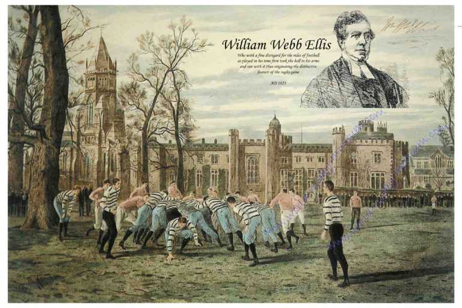
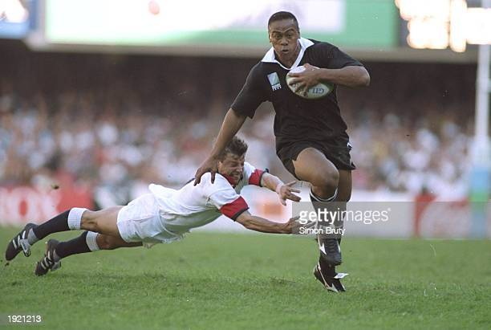
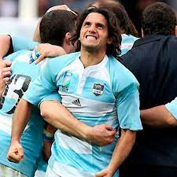
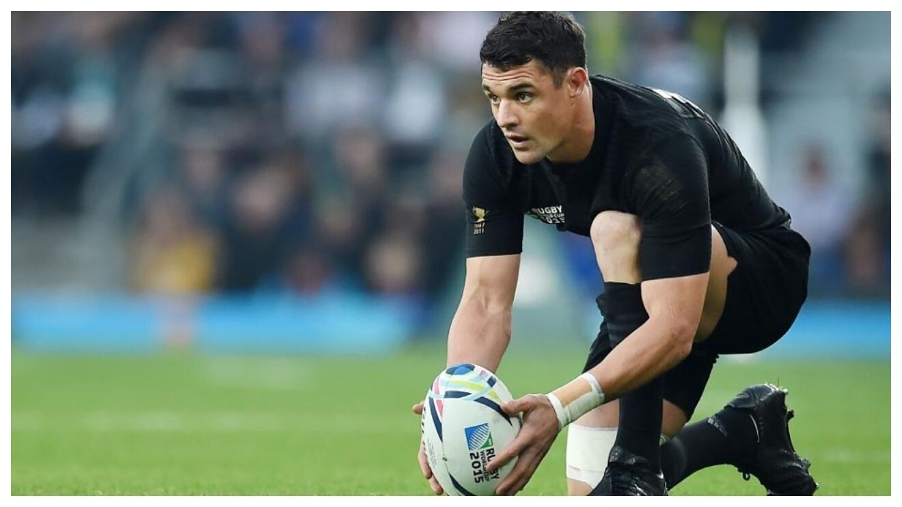
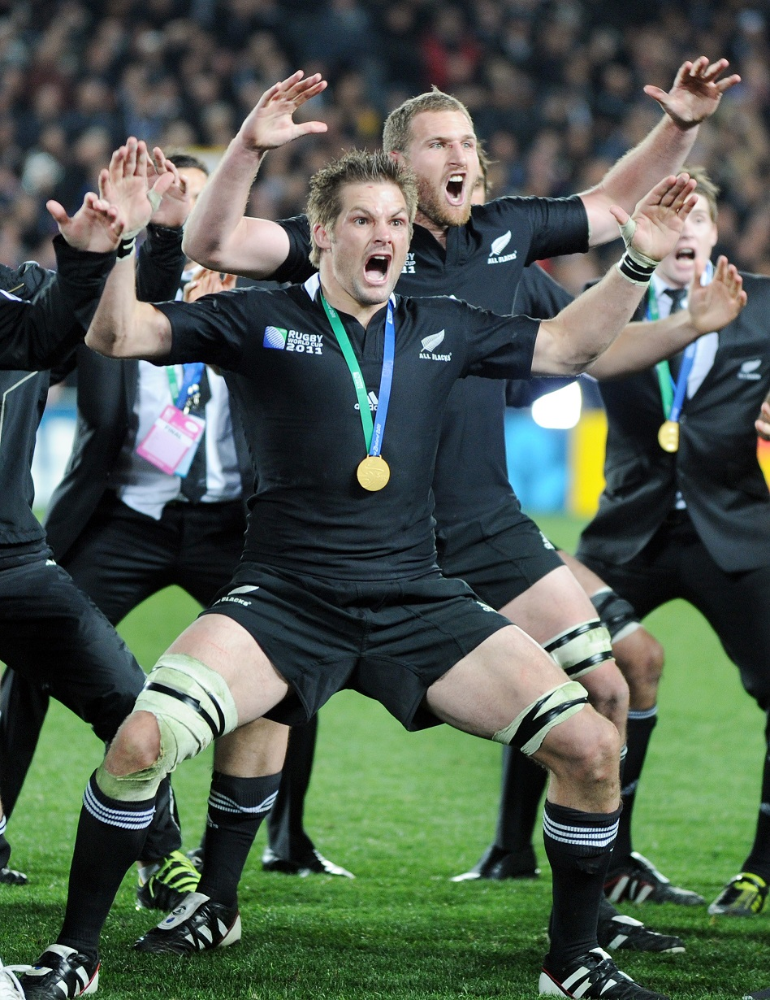
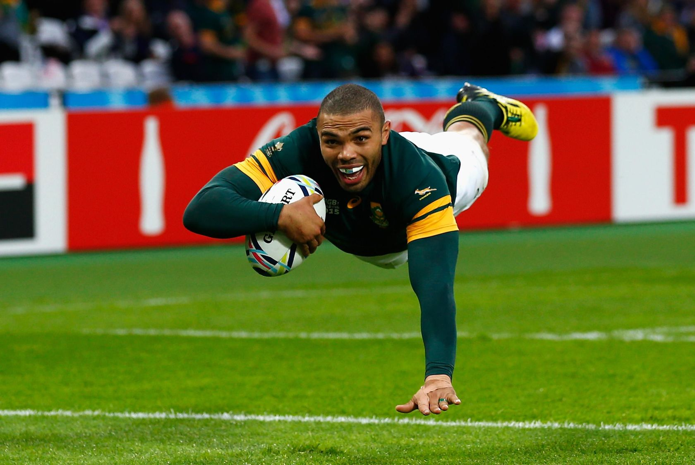

El rugby nació en el siglo XIX en Inglaterra, en torno a 1823, y su origen tuvo lugar en la región inglesa de Rugby, en el condado de Warwrickshire. El estudiante William Webb Ellis, que después sería clérigo en la Iglesia Anglicana, tomó un balón de fútbol con las manos y corrió con velocidad por todo el campo para depositarla en el suelo de la portería contraria. Los espectadores y jugadores allí presentes se quedaron sorprendidos de lo que hizo el joven Ellis, que desafió las reglas del fútbol, que era el deporte practicado por todos.
A partir de entonces el rugby se fue popularizando en Inglaterra y en los países anglosajones europeos y surgió la necesidad de normalizar el deporte bajo una serie de reglas de juego. De esta forma se crearon escuelas y clubes dedicados a este deporte para impulsar su práctica, como las reglas de los colegios de Eton (1847) y Cambridge (1848), donde afirmaban primar más la habilidad que la fuerza.

Comienzos
En restorán Pall Mall de Londres el 26 de enero de 1871 se fundó la primera federación de rugby football, la Rugby Football Union de Inglaterra, integrada entonces por 22 clubes. Tres abogados que habían sido alumnos de Rugby se encargaron de redactar el primer reglamento, que se aprobó en junio de 1871. El 27 de marzo del mismo año se disputó el primer partido internacional entre Inglaterra y Escocia en Edimburgo. En 1877 el número de jugadores se redujo de 20 a 15 por equipo. En 1886 Escocia, Gales e Irlanda fundaron la International Rugby Football Board (IRFB), el organismo internacional rector de este deporte.
Con la extensión por el Reino Unido, se organizó en 1883 el primer torneo internacional: el Torneo de las Cuatro Naciones, entre las naciones británicas: Inglaterra, Escocia, Gales e Irlanda. Tras el éxito de la primera edición, se hizo anual y persiste en la actualidad con dos nuevos integrantes.
Reglas basicas
No se permite pasar el balón hacia adelante. Tampoco se permite que el balón caiga hacia adelante, lo cual se denomina knock-on o Avant.
El balón sólo puede avanzar llevándolo o pateándolo hacia adelante.
Cualquier jugador en el campo de juego puede avanzar con el balón.
Un jugador placado o tacleado (derribado) debe pasar o soltar inmediatamente el Balón. El jugador que taclea debe también soltar inmediatamente al jugador tacleado.
El rugby es un deporte continuo. No se preveé interrupciones (a menos que haya una lesión.).
Una mele/scrum reinicia el juego después de un pase hacia adelante o un knock-on. También se forma una mele/ scrum en otras ocasiones menos frecuentes.
Un line-out reinicia el juego cuando el balón sale del terreno de juego.
Un Ensayo/Try es otorgado cuando el balón es llevado mas allá la línea de goal (zona de anotación)y apoyado en el suelo.
5 puntos se otorgan al realizar un ensayo/try.
2 puntos se otorgan al convertir la patada adicional después de un ensayo/try.
3 puntos se otorgan al convertir un gol de campo (golpe) después de cometida una infracción.
3 puntos se otorgan al convertir un drop (patada de bote-pronto) en juego abierto.
Después de que se convierte un ensayo/try o un penal, el balón es pateado hacia el equipo anotador (excepto en sevens, rugby con siete jugadores por lado).
El árbitro es el responsable de hacer respetar el reglamento.
Se juega en dos tiempos continuos de 40 minutos cada uno con un intermedio de 5 minutos.
El tiempo lo lleva el árbitro principal y debe detenerlo solamente cuando haya lesiones.
Hay dos jueces de línea que ayudan a indicar cuándo el balón o la persona que lo lleva salen del campo de juego.
Posiciones
FORWARDS (DELANTEROS): jugadores del 1 al 8.
PRIMERA LÍNEA: Son los jugadores más pesados del equipo. Es la línea que va al choque en la melé contra el rival.
Pilar izquierdo (Prop): Los pilares destacan por dar estabilidad a la melé y por apoyar a los compañeros en los rucks y mauls.
Talonador (Hooker): Lider espiritual del equipo. Destaca por su inteligencia y capacidad de sincronización con el medio melé (el que introduce el balón). Igual que los pilieres tienen la misión de llegar a los agrupamientos (mauls y rucks)
Pilar derecho (Prop)
SEGUNDA LÍNEA: Suelen ser los jugadores más altos en los equipos. Además, son los que ganan el balón saltando en los saques de touche (line-out). También dan cobertura tanto al ataque en agrupaciones como placando en defensa.
Segunda línea izquierdo (Second row)
Segunda línea derecho (Second row)
TERCERA LÍNEA: Son los jugadores que dan estabilidad a las formaciones. Tienen que estar en continuo movimiento para apoyar tanto a la defensa como el ataque. Jugadores con buen fondo físico que tienen que estar atento a cada jugada. Participan tanto en las melés como en las touches.
ercera izquierdo (Flanker)
Tercera derecho (Flanker)
Tercera centro (Número 8): jugador inteligente que tiene que controlar el movimiento de la melé y de las agrupaciones (ruck y maul).
BACKS (LÍNEA DE TRES CUARTOS): jugadores del 9 al 15
Medio melé (Scrum half): jugador que dirige a los delanteros (forwards) y se encargar de surtir balones a los backs. Es un jugador que tiene que tener muy buena técnica para poder ejecutar los pases con precisión. Explosividad y rapidez. Es el jugador que introduce el balón en la melé. Buena técnica con el pie.
Apertura (Fly half): Es el líder del ataque. El primer jugador que comienza la jugada y que destaca por tener la táctica en su cabeza. Además también se convierten en muchas jugadas en el primer defensor en llegar a la jugada. Hábiles y explosivos. Suele tener la mejor técnica con el pie.
Ala izquierdo (Left wing): jugadores muy veloces que pueden ejecutar el contrataque a la perfección. Son oportunos y tienen que buscar nuevas posiciones en las diferentes fases del ataque y la defensa. Buena técnica para el pase y buena ejecución con los pies para poder crear jugadas de peligro.
Primer centro (Inside center): jugadores podererosos en ataque que tienen que tienen la capacidad de penetrar en las defensas rivales. Buena técnica con las manos y los pies para precisar los pases y los puntapiés. Además tienen que ser fuertes y duros para placar a los rivales.
Segundo centro (Outside center): jugadores podererosos en ataque que tienen que tienen la capacidad de penetrar en las defensas rivales. Buena técnica con las manos y los pies para precisar los pases y los puntapiés. Además tienen que ser fuertes y duros para placar a los rivales.
Ala derecho (Right wing): jugadores muy veloces que pueden ejecutar el contrataque a la perfección. Son oportunos y tienen que buscar nuevas posiciones en las diferentes fases del ataque y la defensa. Buena técnica para el pase y buena ejecución con los pies para poder crear jugadas de peligro.
Zaguero (Full back): jugador que tiene que destacar por su colocación. Tiene que ser un gran placador y poder apoyar con velocidad en las jugadas de ataque. Además suelen tener una buena potencia y precisión para poder despejar el peligro con el pie.
Figuras de la historia
JONAH LOMU : Jugador de los All Blacks fue y sigue considerado el mejor jugador del mundo por excelencia, fue incluido en el Salón de la Fama del Rugby el 9 de octubre de 2007. Considerado como la primera super-estrella mundial, gracias a su increíble capacidad física y a la intimidación que producía en sus rivales, tuvo un grandísimo impacto en todos sus encuentros.

AGUSTÍN PICHOT : Ex-jugador de Los Pumas (medio melé) con la que jugó cuatro Copas del mundo, siendo nombrado capitán en el Mundial de Francia 2007. Fue premiado con el Premio Konex en los años 2000 y 2010 como mejor rugbier de la década en Argentina, además es miembro del Salón de la Fama del Rugby desde el 2011. Actualmente es el vicepresidente de World Rugby.

DANIEL CARTER: Es mayor goleador de la Super Rugby League donde jugó hasta mediados de 2015. Actualmente es el apertura titular de Racing92 en la Top14 de Francia. Ha sido elegido como mejor jugador del mundo en 2005, 2012 y de nuevo en 2015; es considerado, por los expertos de este deporte, como el mejor apertura de todos los tiempos y uno de los mejores jugadores de rugby de la historia.

RICHIE MCCAW : Jugador neozelandés, actualmente juega para los Canterbury en la National Provincial Championship y a los Crusaders en Super XV. Fue capitán de los All Blacks hasta el pasado 2015; es considerado el mejor tercer línea en funcionamiento del mundo además de particular conocido por su resistencia lo que le permite obtener el balón en cualquier parte del campo, y por lo tanto ser un constante apoyo para su sus compañeros. En 2006, 2009 y 2010 fue elegido como mejor jugador del mundo por la World Rugby.

BRYAN HABANA : Jugador sudafricano que juega en posición de ala . Es uno de los jugadores más rápidos de todos los tiempos, corriendo, en 2007, cien metros en 10.4 segundos. El 7 de octubre de 2015 en el Mundial de Rugby de Inglaterra, con 3 ensayos durante el partido contra Estados Unidos completó un total de 15 ensayos en campeonatos mundiales, igualando a la leyenda del rugby neozelandés Jonah Lomu.

JONNY WILKINSON : Wilkinson ganó el premio a Mejor Jugador del Mundo en el año 2003.1 Fue miembro del equipo inglés ganador de la Copa del Mundo de 2003, marcando el tanto de drop que permitió la victoria a su equipo ante Australia en el último minuto de tiempo suplementario del partido final. También realizó dos giras con los British and Irish Lions en 2001 y 2005, marcando 67 puntos en los seis partidos en los que participó. El 3 de abril de 2009 la Universidad de Surrey le otorgó un doctorado honoris causa por sus servicios a la industria deportiva.2 Se retiró de su selección finalizado el mundial de Nueva Zelanda 2011 y de su carrera profesional en mayo de 2014 luego de ganar la Copa de Europa.